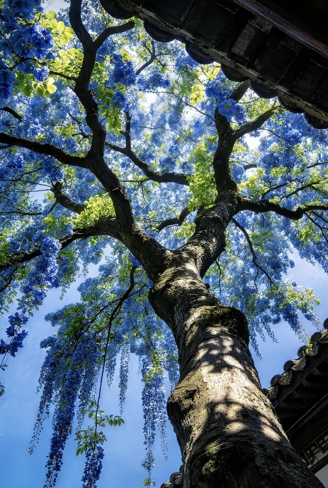
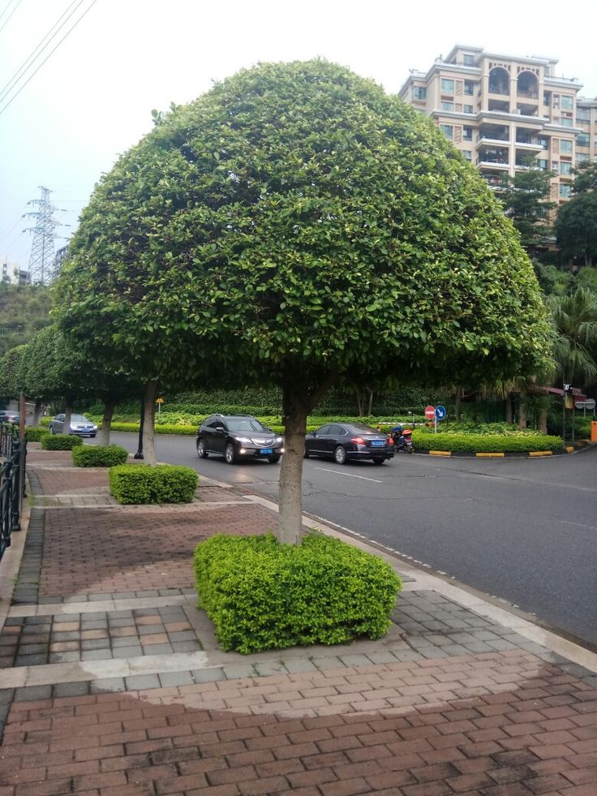
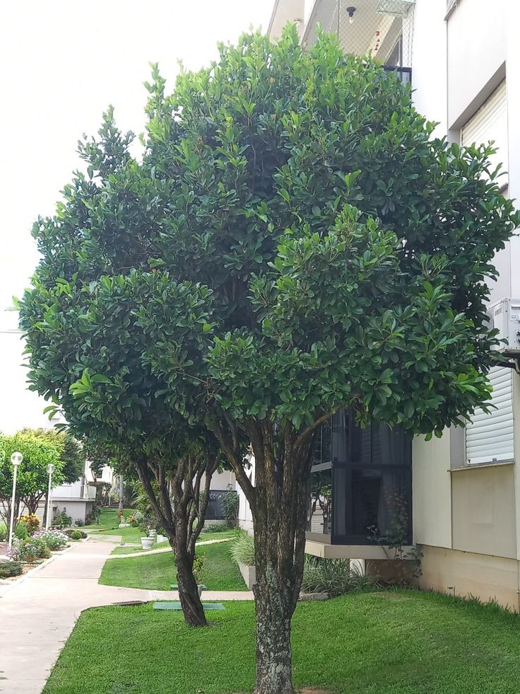
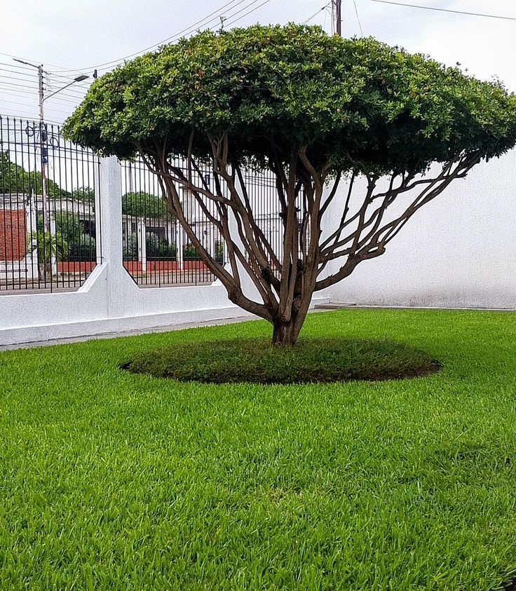

ARTE E FLORES PAISAGISMO
Poda de Árvores
Cuidados e manutenção para manter suas árvores saudáveis, organizadas e o ambiente mais seguro.
🌳 SOLICITAR ORÇAMENTO
NOSSOS CUIDADOS
Poda feita com cuidado e atenção.
A poda adequada ajuda a manter as árvores organizadas, bonitas e em melhores condições, além de contribuir para a segurança do ambiente.
Poda de formação
Cuidados para orientar o crescimento e manter a estrutura da árvore.
Remoção de galhos
Retirada de galhos secos, quebrados ou que estejam prejudicando o espaço.
Limpeza da copa
Organização dos galhos para melhorar a aparência e o desenvolvimento da árvore.
Galhos em situação de risco
Avaliação e remoção de galhos que possam representar riscos ao ambiente.
Áreas residenciais
Poda de árvores em quintais, jardins e áreas externas de residências.
Manutenção das árvores
Cuidados periódicos para manter as árvores bonitas e bem cuidadas.
Retirada dos resíduos
Após o serviço, os galhos e resíduos são organizados e retirados do local.
Limpeza da área
Deixamos o espaço organizado após a realização do serviço.
NOSSO TRABALHO NA PRÁTICA
Cuidado que faz a diferença.
Confira alguns exemplos de trabalhos realizados com árvores e áreas verdes.



Uma árvore bem cuidada
valoriza todo o ambiente.
Conte com a Arte e Flores Paisagismo para cuidar das suas árvores.
FALE CONOSCO
Precisa de poda de árvores?
Selecione os serviços que você precisa e solicite seu orçamento.